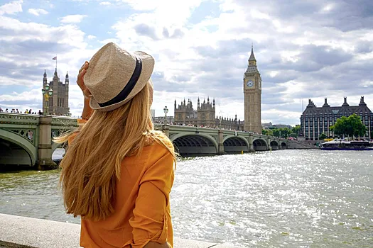

Наталия Ансталь добавила, что в Таиланде сравнительно дорогая еда, если питаться в ресторанах. Там одно блюдо может обойтись от 10 до 20 долларов. Но если покупать продукты на рынке и готовить самостоятельно, можно уложиться примерно в 200 долларов в месяц.
Пожалуй, самый бюджетный вариант зимовки — Гоа, считает Наталия Ансталь. Однако, по ее мнению, это направление подойдет не всем.Для въезда в Индию нужна виза. Чтобы ее оформить, нужно сдать документы в посольство. Стандартная однократная виза выдается на срок от одного до трех месяцев. Цены на жилье и еду в Индии довольно низкие. Аренда комнаты начинается от 20 тысяч рублей. Еда на месяц обойдется в сумму около 20 тысяч рублей, если покупать на рынках премиальные продукты и готовить из них.
Многие пишут про то, как сэкономить на поездке в Лондон. Я хочу просто показать вам красоту этой потрясающей столицы! Я побывала в Англии в феврале в командировке в городе Лидс, и на выходных решила съездить в Лондон. Давно мечтала оказаться в этом городе.Побывав во многих городах Европы и США, Лондон остается одним из моих любимых городов, благодаря своему масштабу, архитектуре, истории, смешению стилей, безумной энергии и колориту. Для меня это выдающийся город с богатой историей и безумной энергетикой. Скоростной поезд из Лидса до Лондона идет порядка 2.5 часов, билеты стоят прилично, но если покупать заранее, то можно сэкономить. Вообще в Англии все дорого, надо просто быть к этому готовым, что дешево там ничего не будет, траспорт, отели, еда - все дорого.
